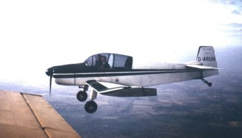

I was easily led in those days! - It all started with a rep named Tony
Woods calling at the warehouse. (He was not a newspaper rep.) and asking
me if I would like to have a try at motor racing. There were week-end
courses available at Snetterton for £25 where you got to drive a formula
? car after a days instruction etc., but as it turned out the company had
gone broke, so that was that! The next time I saw him, he said Oh!- I go
flying now. He had joined the Allouette Flying Club at Biggin Hill. He
said he could fix it for me to have a free trial flight etc., etc., and
on the following Wednesday I duly met him there.
The Allouette Flying Club was a little brick built 'shed' left over from
WWII I imagine. It had tea making facilities and allegedly an Auster
Taylorcraft aeroplane that was no where to be seen. It had gone to Le
Touquet the previous Sunday, the instructor having taken some one's wife
for a day's shopping and the weather/ engine or what ever had caused them
to be stranded. That was their story anyway!
It seemed from then on flying consisted more of talking about it than
actually doing it! After endless cups of tea I finally arrived home
around midnight to a very anxious Mavis, who had phoned my Mum, all the
hospitals etc., (We didn't have mobiles in those days!) I did manage my
free flight. They collared some llittle fellow who was just about to go
up in an Auster belonging to the South London Flying Club and he said OK
you can come with me.....
They never let on that it was his first flight having just acquired a PPL
(Private Pilot's Licence). Well it went up smoothly enough and we buzzed
around here and there until the weather seemed to worsen a little. He
said "we had better head back to Biggin" and with that he turned the
thing around and we headed back. (?) After a while he said "I think we
are lost, - Oh! There's another plane, we can follow him!"
Some hopes. By the time he'd angled the plane around there was no sign of
the other chap. Oh! he said "There's a train station we can go down and
read the name off the platform signs." - again some hopes!! I asked if he
had a map, and he had, so I opened it up and had a decko. Then he said
"There is a pretty big town down there, it could be Tonbridge." a minute
or so later he said "I know where we are" and directly below us was the
Thames and King George IV Docks near Greenwich. He said he had set the
compass arse about face and had been flying north when he had meant to
fly south!!
He duly set the compass correctly and headed due south. After a few
minutes I spotted what appeared to be Bromley five or six miles to our
right. I pointed that out to him and he agreed and then found his way to
Biggin successfully. Once again on Terra firma I thought "If he can do it
and get a licence I am sure I can" So I coughed up £5 and joined the
allouette flying group.